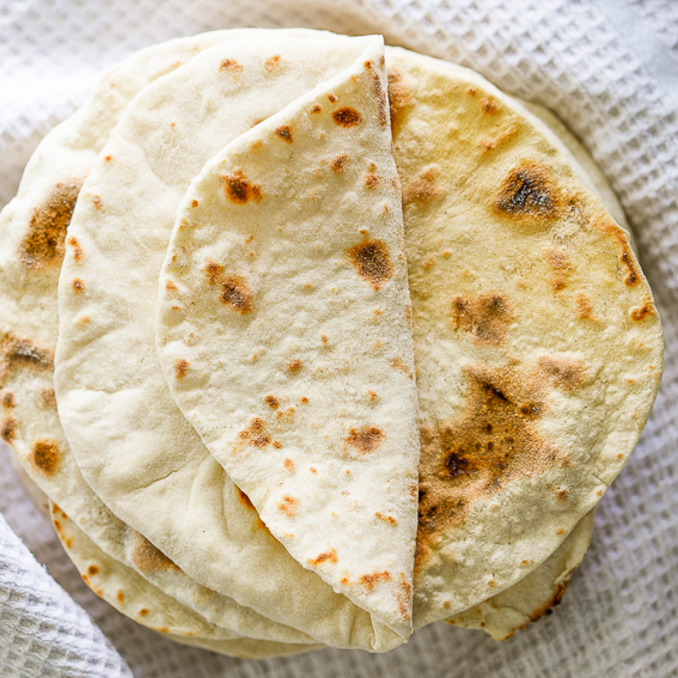

Flour Tortillas

Description
A simple recipe for making flour tortillas from scratch at home
Ingredients
- 2 cups flour
- 1 tsp baking powder
- 1 tsp salt
- 1/2 cup unsalted butter, melted
- 3/4 lukewarm water
Directions
- Mix dry ingredients. Add butter and water. Mix until combined. If necessary add flour in 1 tbsp increments until combined
- Let dough rest 10 minutes. Heat large skillet over medium heat
- Divide dough into 12 and roll into 8 inch circles
- Cook in skillet about 1 minute each side